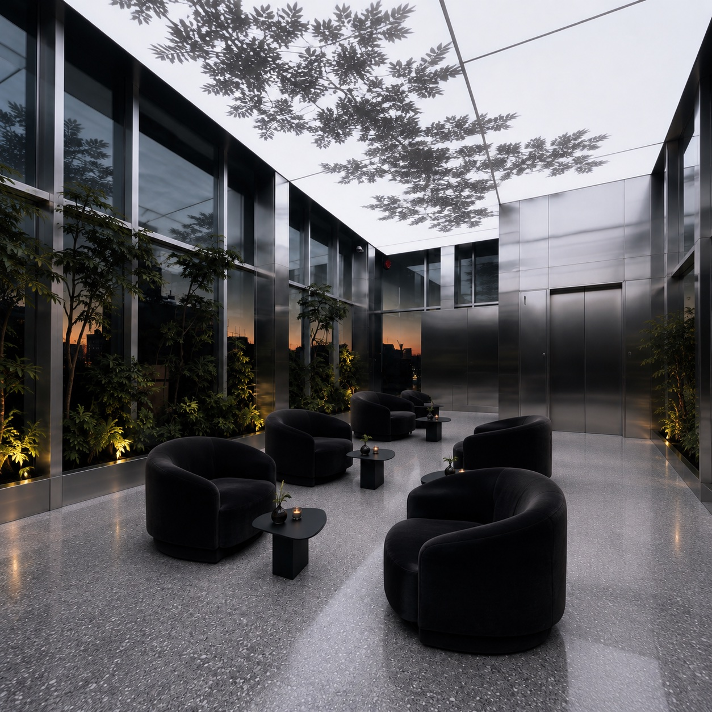
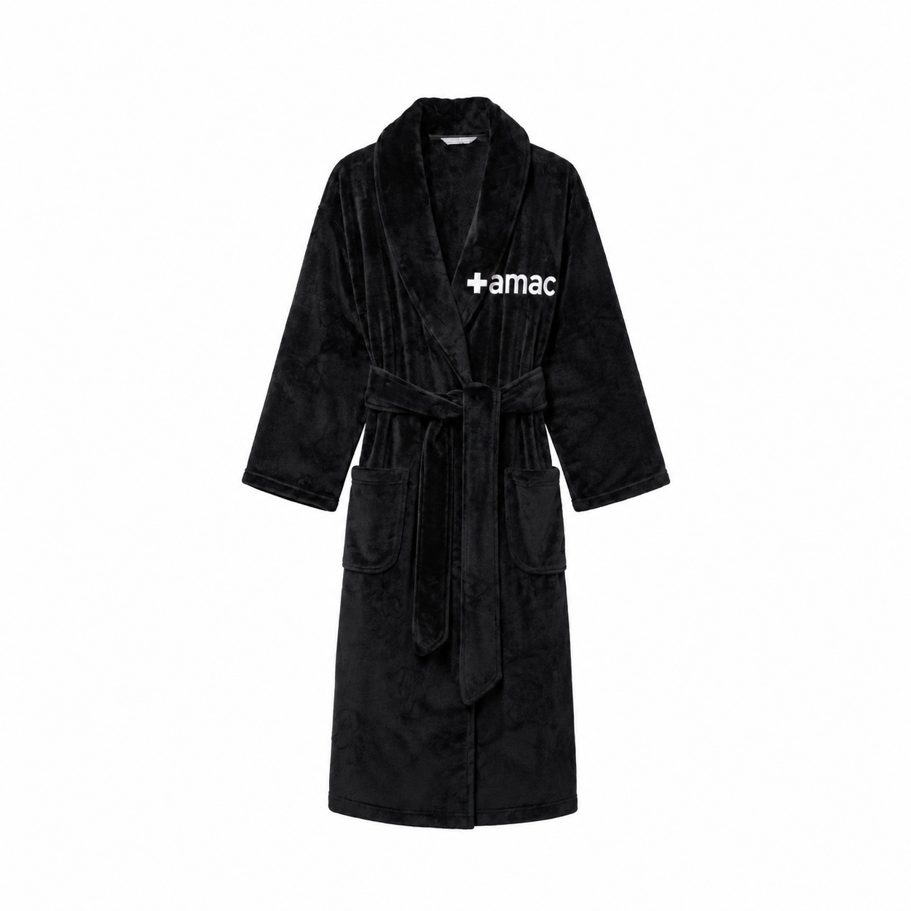
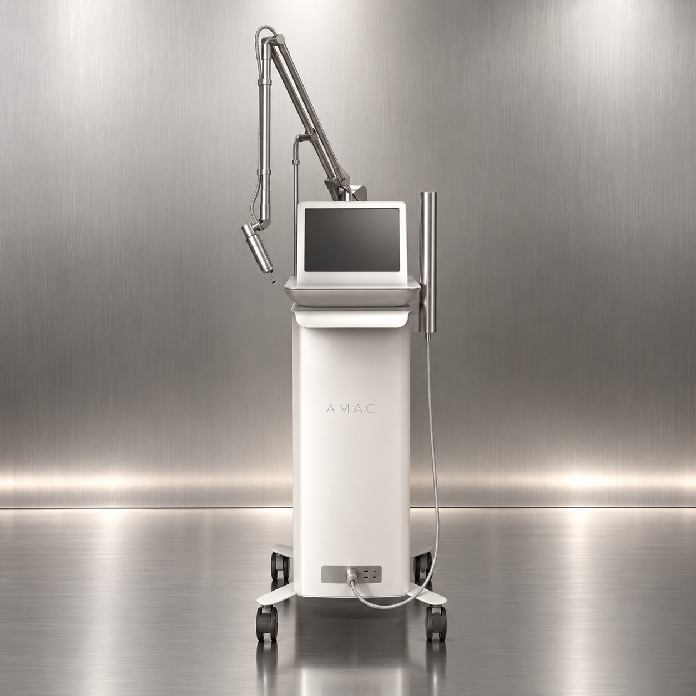
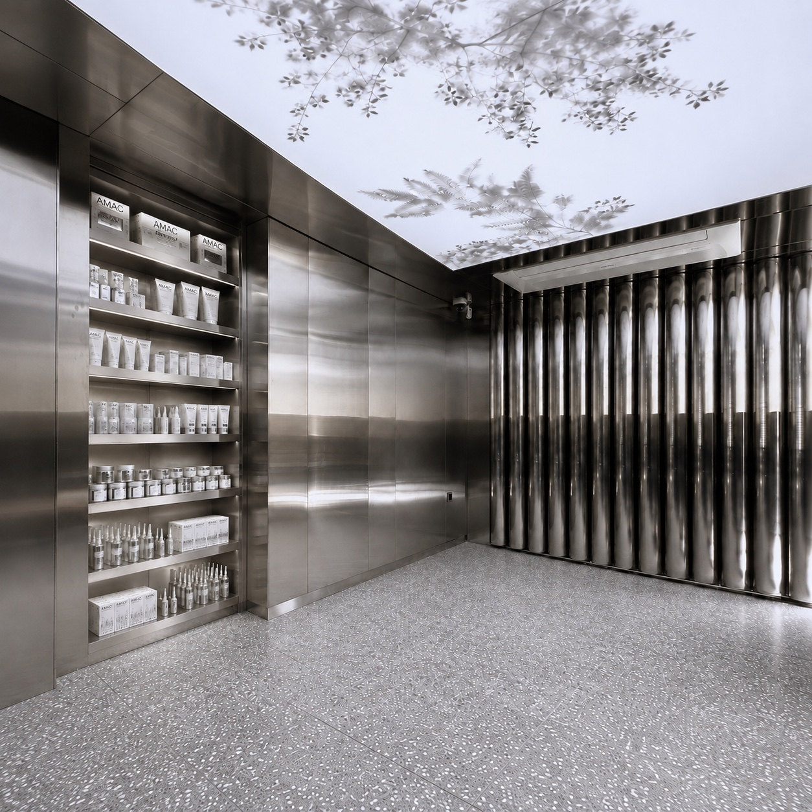
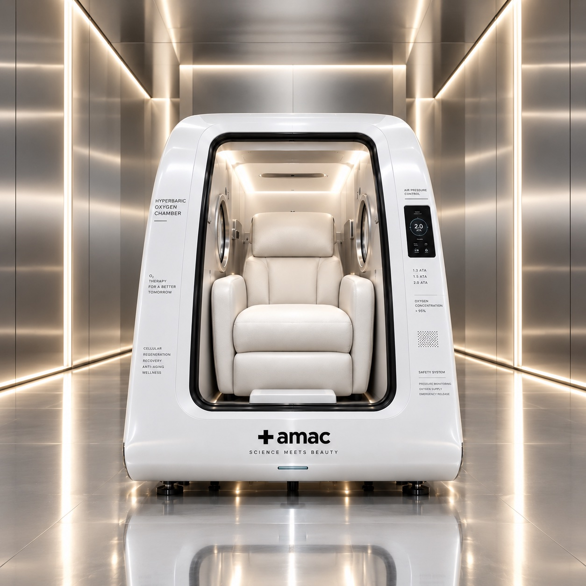

Nestled in Japan's pristine nature, Therman Wellness Resort delivers an unparalleled high-end retreat focused on mind-body rejuvenation, bespoke healing therapies, and refined Japanese hospitality.
Wellness, Made Personal
A private skin and body experience created around your condition, your rhythm and the way you feel today. At AMAC, considered treatments, expert hands and high-performance formulas come together to restore a sense of balance from skin to body.

EntirelyPrivate
From the moment you arrive, your time at AMAC unfolds in complete privacy.
Each treatment takes place in an individual space designed for one guest, allowing you to
step away from the outside world without noise, interruption or distraction.
Everything—from the light and temperature to the pace of your treatment—i
s considered to help you feel entirely at ease.
Designed
Around You
Every visit begins with your condition today.
We consider your skin, areas of physical tension and overall sense
of wellbeing before shaping a treatment around what you need most.
Techniques, intensity and products are thoughtfully adjusted throughout the session,
creating an experience that is never fixed and never quite the same twice.
The
Wellness
Circuit
Your experience extends beyond the treatment room.
Warmth in the sauna helps the body settle, while the private lounge
offers space to rest before returning to the rhythm of the day.
Move through each space without urgency. The transition between warmth,
treatment and rest is designed to deepen relaxation and complete the AMAC ritual.
Guided by
Expert Hands
AMAC therapists bring together an attentive understanding of the skin and body with refined hands-on techniques. Working across both face and body, they consider the relationship between skin condition,
physical tension and overall wellbeing.
Every movement, pressure and sequence is carefully adjusted to you—
creating a treatment that feels precise, intuitive and deeply personal.
Powered
by AMAC
Every treatment is performed exclusively with AMAC formulas.
Each product is selected according to your skin’s condition and
applied in a considered sequence to support the purpose of your treatment.
Through professional techniques and intentional layering, familiar skincare
becomes a more immersive and deeply sensorial experience.
Continue
the Ritual
The AMAC experience does not end when you leave the treatment room.
Based on your skin’s condition and the formulas used during your session, we recommend a personal home-care ritual to help preserve its comfort, balance
and radiance in the days that follow.
Continue with the products selected for you and bring a considered
part of the AMAC experience into your everyday routine.

Space Between
The private lounge gives the body time to settle before and after treatment.
Quiet light and complete privacy allow the restorative feeling to remain a little longer.
Before the Treatment
The ritual begins as you change into the AMAC robe.
Softness against the body marks the transition away from the outside world and into a quieter state.


AMAC, Throughout
Only AMAC formulas are used throughout each treatment.
Textures and active care are carefully layered to support the skin at every stage of the ritual.
Technology, With Intention
Advanced aesthetic technology is selected according to the condition of your skin.
Guided by professional judgement, every setting and sequence remains precise, measured and personal.

A Deeper Kind of Breath
Elevated pressure allows the body to take in more oxygen.
In complete stillness, each breath becomes part of recovery.
The body slows, creating space for deeper restoration.
Rest for Body and Mind
Complete stillness gives the body space to recover.
Hyperbaric oxygen offers a quiet pause from fatigue and daily stimulation.
The body feels rested as the mind returns to balance.

A Personalised Recovery Session
Each session begins with an understanding of your present condition.
Time, pressure and accompanying rituals are carefully considered.
Recovery becomes personal, measured and entirely your own.
Integrated with AMAC Care
AMAC integrates hyperbaric oxygen with skin, body and longevity care.
Each session is tailored alongside aesthetic and restorative rituals.
Together, they support lasting vitality from within.